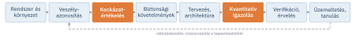
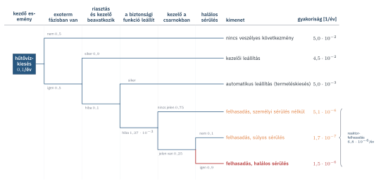
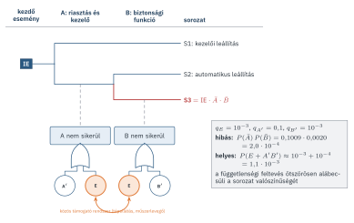
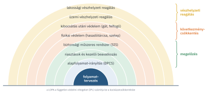
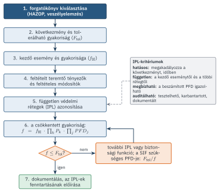
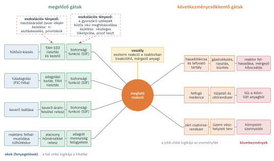

11. Eseményfa, rétegzett védelem és csokornyakkendő-modell

A hibafa egyetlen nemkívánatos esemény okait bontja le. A biztonsági elemzés másik fele a következményeké: ha a nemkívánatos esemény bekövetkezett, milyen kimenetekhez vezethet, és ezeket mely védelmek akadályozzák meg vagy enyhítik? Erre a kérdésre az eseményfa felel, amely egy kezdő eseményből kiindulva, a védelmek sikerén vagy kudarcán elágazva írja le a lehetséges eseménysorozatokat. A folyamatiparban az eseményfa egyszerűsített, félkvantitatív változata, a rétegzett védelem elemzése (LOPA) lett a biztonsági funkciók integritási követelményének meghatározására a legelterjedtebb módszer. A csokornyakkendő-modell pedig a hibafa és az eseményfa logikáját egyetlen, szemléletes képbe foglalja. A fejezet végén azt is áttekintjük, hogyan kapcsolódnak egymáshoz az eddig megismert modellek.
A fejezet végére képes leszel
- egy kezdő eseményhez eseményfát szerkeszteni, és kiszámolni a kimenetek gyakoriságát;
- felismerni és kezelni az eseményfa ágai közötti függőségeket, és az eseményfát hibafákkal összekapcsolni;
- LOPA-elemzést végezni: azonosítani a független védelmi rétegeket, és meghatározni egy biztonsági funkció szükséges PFD-jét és SIL-jét;
- csokornyakkendő-diagramot készíteni a megelőző és a következménycsökkentő gátakkal és az eszkalációs tényezőkkel;
- kiválasztani egy elemzési kérdéshez a megfelelő modellt (blokkdiagram, hibafa, eseményfa, csokornyakkendő, Markov-modell).
11.1. Az eseményfa
Az eseményfa-elemzés (event tree analysis, ETA) induktív, előre haladó módszer: egy kezdő eseményből (initiating event) indul, és időrendben végigköveti, hogy az egymást követő biztonsági funkciók, gátak vagy feltételek sikere vagy kudarca milyen eseménysorozatokhoz és kimenetekhez vezet. A módszer a nukleáris ipar 1975-ös reaktorbiztonsági tanulmányában (WASH-1400) vált a valószínűségi biztonsági elemzés alappillérévé, ahol a kezdő eseményekből kiinduló eseményfák ágaihoz a biztonsági rendszerek hibafái kapcsolódtak (U.S. Nuclear Regulatory Commission 1975). Nemzetközi szabványa az IEC 62502 (IEC 2010).
Az eseményfa szerkesztésének lépései (IEC 2010; Rausand és mtsai. 2020):
- A kezdő esemény meghatározása: egy olyan esemény, amely a védelmek közbelépése nélkül nemkívánatos következményhez vezetne (például hűtésvesztés, csőtörés, egy személy belépése a robot munkaterébe). A kezdő eseményeket a veszélyelemzés (HAZOP, FMEA) adja (5. fejezet); gyakoriságukat évenkénti előfordulásban adjuk meg.
- A biztonsági funkciók és feltételek azonosítása: azok a gátak (automatikus védelmek, kezelői beavatkozás, passzív eszközök) és feltételek (például gyújtóforrás jelenléte, emberek jelenléte), amelyek befolyásolják a kimenetet. Ezek alkotják az eseményfa fejléceit, időrendi sorrendben.
- A fa felépítése: minden fejlécnél két ág (siker és kudarc, vagy igen és nem); megállapodás szerint a felső ág a kedvező. Ha egy funkció kudarca után a további fejlécek már nem befolyásolják a kimenetet, az ág nem ágazik tovább.
- A kimenetek leírása és besorolása: minden ág végén egy kimenet (például biztonságos leállás, termeléskiesés, kibocsátás, halálos sérülés).
- Számszerűsítés: egy eseménysorozat gyakorisága a kezdő esemény gyakoriságának és az ágak feltételes valószínűségeinek szorzata,
\[ f_{\text{sorozat}} = f_{\mathrm{IE}} \cdot \prod_{k} P(\text{ág}_k \mid \text{az előző ágak}) . \tag{11.1}\]
- Értékelés: a kimenetek gyakoriságának összevetése a kockázati kritériumokkal (3. fejezet), az azonos kimenetek gyakoriságának összegzése, és a domináns sorozatok azonosítása.
A kezdő esemény a hűtővíz kiesése, évi \(0{,}1\) gyakorisággal (11.1. ábra). Az első fejléc egy feltétel: az esetek felében a reaktor nem az exoterm fázisban van, ilyenkor a hűtés kiesése nem veszélyes. A második fejléc a magashőmérséklet-riasztás és a kezelői beavatkozás (a kezelő leállítja az adagolást és elindítja a tartalék hűtővízszivattyút), amely tíz esetből egyszer nem sikerül. A harmadik a biztonsági funkció, amelynek igénykori meghibásodási valószínűsége a 13. fejezet szerint \(1{,}37\cdot10^{-3}\). A hasadótárcsát (RD-101) ebben a változatban nem számítjuk be védelemként, mert a HAZOP szerint méretezése kétfázisú áramlásra nem igazolt (5. fejezet). Ha a biztonsági funkció is kudarcot vall, a reaktor felhasadhat; a következmény attól függ, tartózkodik-e kezelő a reaktorcsarnokban (az idő 25%-ában), és ha igen, a sérülés az esetek 90%-ában halálos.

A reaktorfelhasadás gyakorisága \(0{,}1 \cdot 0{,}5 \cdot 0{,}1 \cdot 1{,}37\cdot10^{-3} = 6{,}8\cdot10^{-6}\) évente, a halálos sérülésé \(6{,}8\cdot10^{-6} \cdot 0{,}25 \cdot 0{,}9 = 1{,}5\cdot10^{-6}\) évente. Ezek az értékek szerepeltek a 3. fejezet egyéni kockázati számításában (3.1. táblázat). Az eseményfa a gyakoribb, de kevésbé súlyos kimeneteket is megmutatja: az automatikus leállítás évi \(5\cdot10^{-3}\) gyakorisága például a termelési veszteség és a biztonsági funkció igénygyakoriságának becsléséhez kell.
11.1.1. Függőségek az ágak között
Az 11.1. egyenletben a valószínűségek feltételesek. Ha a fejlécek egymástól függetlenek, a feltételes valószínűség egyszerűen a funkció saját meghibásodási valószínűsége. A valóságban azonban a fejlécek gyakran közös támogató rendszerekre épülnek (tápellátás, műszerlevegő, hűtés, közös érzékelő vagy közös szoftver), és ilyenkor a függetlenségi feltevés súlyos alábecsléshez vezet.
A helyes megoldás az, hogy minden fejléchez hibafát készítünk, és az eseménysorozat valószínűségét az összekapcsolt hibafák minimális vágataiból számoljuk (11.2. ábra). A nukleáris gyakorlatban ezt a megközelítést „kis eseményfa, nagy hibafa” néven ismerik: az eseményfa csak a fő funkciókat tartalmazza, a függőségeket pedig a hibafák közös alapeseményei hordozzák (U.S. Nuclear Regulatory Commission 1975; Rausand és mtsai. 2020). A másik lehetőség, a „nagy eseményfa, kis hibafa”, a támogató rendszereket külön fejlécekként veszi fel, és a további ágakat ezek állapotától függően számolja.

A jelenség ugyanaz, amellyel a 10. fejezetben a ReaktorVéd tápegységeinél találkoztunk: a redundancia csak annyit ér, amennyire a rétegek függetlenek. Ezért a rétegzett védelem elemzésének egyik legfontosabb követelménye a rétegek függetlenségének igazolása.
A kollaboratív robotcellában a kezdő esemény az, hogy a szerelő a robot gyors mozgása közben belép a közös munkatérbe. Ez műszakonként akár többször is megtörténik, ezért a kezdő esemény gyakorisága évente több száz vagy ezer is lehet. Az első fejléc a sebesség- és távolságfelügyelet (a lézerszkenner érzékeli a szerelőt, és a robot lelassít), a második az erő- és teljesítménykorlátozás (ha mégis ütközés történik, az erő az ISO/TS 15066 szerinti biomechanikai határérték alatt marad) (ISO 2016). A kimenetek: nincs érintkezés; érintkezés megengedett erővel; érintkezés nagy sebességgel (sérülés).
Az eseményfa logikája ugyanaz, mint a ReaktorVédnél, de a számok természete más. Ha a kezdő esemény évente ezerszer fordul elő, egy \(10^{-3}\)-as igénykori meghibásodási valószínűségű védelem évente egyszer hibázna. Ilyen gyakori igénynél a védelem nagy igénybevételű vagy folyamatos üzemmódban működik, és a mérvadó jellemző a veszélyes meghibásodás gyakorisága (PFH, óránként), nem az igénykori valószínűség (13. fejezet). A gépbiztonságban ezért a teljesítményszintet (PL) és a SIL-t is óránkénti meghibásodási gyakorisággal adják meg (ISO 2023; IEC 2021).
11.2. Rétegzett védelem elemzése (LOPA)
A folyamatiparban a veszélyes forgatókönyveket több, egymástól független védelmi réteg óvja (11.3. ábra). A legbelső réteg maga a folyamattervezés (az inherens biztonság), ezt követi az alapfolyamat-irányító rendszer (BPCS), a riasztások és a kezelői beavatkozás, a biztonsági műszeres rendszer (SIS), a fizikai védelmek (biztonsági szelep, hasadótárcsa), a kibocsátás utáni védelmek (gátak, felfogó medence), végül az üzemi és a lakossági vészhelyzeti reagálás (IEC 2016; Center for Chemical Process Safety 2001). A rétegek a megelőzés, a következménycsökkentés és a vészhelyzeti reagálás három csoportjába sorolhatók, ami az energia–gát modell (1.4.2. szakasz) és a Reason-féle svájcisajt-modell (1. fejezet) mérnöki megfelelője.

A rétegzett védelem elemzése (layer of protection analysis, LOPA) a CCPS 2001-es kézikönyvével vált általánossá (Center for Chemical Process Safety 2001), és az IEC 61511-3 F melléklete a SIL-meghatározás egyik elfogadott módszereként ismerteti (IEC 2016). A LOPA lényegében egyetlen ágra szűkített, nagyságrendi becslésekkel dolgozó eseményfa: egy kezdő eseménytől egyetlen súlyos következményig követi a forgatókönyvet, és csak azt kérdezi, hogy a független védelmi rétegek együtt elegendő kockázatcsökkentést adnak-e. Félkvantitatív módszer: a számok nagyságrendi pontosságúak, de a következtetései ellenőrizhetők és következetesek, ami a kockázati mátrixokhoz képest nagy előny (3.3. szakasz).
A LOPA lépéseit a 11.4. ábra foglalja össze. A forgatókönyvet rendszerint a HAZOP adja. A tolerálható gyakoriságot a vállalat kockázati kritériumai határozzák meg a következmény súlyossága szerint. A kezdő esemény gyakoriságát és a védelmi rétegek PFD-jét a vállalati vagy iparági táblázatokból veszik (11.1. táblázat). A feltételt teremtő tényezők (enabling conditions) annak a valószínűségét adják meg, hogy a rendszer a veszélyes állapotban van (például a reaktor exoterm fázisban), a feltételes módosítók (conditional modifiers) pedig a következmény bekövetkezésének feltételeit (gyújtás valószínűsége, emberek jelenléte, halálos kimenetel valószínűsége) (Center for Chemical Process Safety 2015).

11.2.1. Független védelmi rétegek
A LOPA kulcsfogalma a független védelmi réteg (independent protection layer, IPL). Egy eszköz, rendszer vagy intézkedés csak akkor számít IPL-nek, ha négy feltételt teljesít (Center for Chemical Process Safety 2001, 2015):
- hatásos: önmagában képes megakadályozni a vizsgált következményt, és elég gyorsan működik ahhoz, hogy a folyamat még a veszélyes állapot előtt megálljon;
- független: működése nem függ a kezdő eseménytől és a forgatókönyvben beszámított többi IPL-től (nincs közös érzékelő, logika, beavatkozó, tápellátás vagy közös emberi hibaforrás);
- megbízható: a beszámított PFD a tervezés, a tesztelés és a tapasztalat alapján igazolható;
- auditálható: rendszeresen tesztelik és karbantartják, és ez dokumentált.
A kezelői beavatkozás csak akkor IPL, ha a riasztás független a kezdő eseménytől, a kezelőnek elegendő ideje van (jellemzően legalább tíz perc) a felismerésre, a döntésre és a beavatkozásra, és a teendőt írásos utasítás rögzíti, amelyet rendszeresen gyakorolnak (Center for Chemical Process Safety 2015). Az IEC 61511 azt is kiköti, hogy a BPCS-nek beszámított kockázatcsökkentés legfeljebb tízszeres lehet, ha a BPCS nincs a funkcionális biztonsági szabványok szerint tervezve (IEC 2016). A puszta eljárások, a képzés és a felügyelet önmagukban nem IPL-ek; fontosak, de hatásuk nem számszerűsíthető úgy, mint egy fizikai rétegé.
| Kezdő esemény | Jellemző gyakoriság [1/év] |
|---|---|
| BPCS szabályozókör meghibásodása | \(10^{-1}\) |
| hűtővíz kiesése | \(10^{-1}\) |
| szivattyú tömítésének meghibásodása | \(10^{-1}\)–\(10^{-2}\) |
| kezelői hiba rutinfeladatnál (alkalmanként) | \(10^{-1}\)–\(10^{-3}\) |
| nyomástartó edény katasztrofális meghibásodása | \(10^{-5}\)–\(10^{-7}\) |
| Független védelmi réteg | Jellemző PFD |
| BPCS szabályozókör (ha nem a kezdő esemény része) | \(10^{-1}\) |
| riasztás és kezelői beavatkozás (legalább 10 perc) | \(10^{-1}\) |
| biztonsági szelep, hasadótárcsa (megfelelő méretezéssel) | \(10^{-2}\) |
| felfogó gát, felfogó medence | \(10^{-2}\) |
| biztonsági funkció (SIL 1 / SIL 2 / SIL 3) | \(10^{-1}\) / \(10^{-2}\) / \(10^{-3}\) |
A 3. fejezet becslését most a LOPA formájában rögzítjük (11.2. táblázat).
| LOPA-elem | Leírás | Érték |
|---|---|---|
| következmény | megfutó reakció, a reaktor felhasadása, halálos sérülés lehetősége | – |
| tolerálható gyakoriság | vállalati kritérium halálos kimenetelű forgatókönyvre | \(10^{-5}\)/év |
| kezdő esemény | a hűtővíz kiesése (szivattyúleállás, áramszünet, beragadt szelep) | \(0{,}1\)/év |
| feltételt teremtő tényező | a reaktor exoterm fázisban van | \(0{,}5\) |
| feltételes módosítók | nem alkalmazzuk (vállalati szabály) | 1 |
| IPL 1 | TAH-103 riasztás és kezelői beavatkozás (a felfutás legalább 20 perc) | \(0{,}1\) |
| nem IPL | TIC-103 hőmérséklet-szabályozás: a kezdő esemény egyik oka | – |
| nem IPL | RD-101 hasadótárcsa: kétfázisú méretezése nem igazolt | – |
| csökkentett gyakoriság SIF nélkül | \(0{,}1 \cdot 0{,}5 \cdot 0{,}1\) | \(5\cdot10^{-3}\)/év |
| szükséges SIF | \(\text{PFD} \le 10^{-5}/(5\cdot10^{-3})\), \(\text{RRF} \ge 500\) | SIL 2 |
A TAH-103 riasztás ugyanannak a BPCS-nek a része, mint a TIC-103 szabályozás. Beszámítható, mert a forgatókönyv kezdő eseményei között a riasztás eszközei (a TT-103 távadó és a kijelzés) nem szerepelnek; a BPCS vezérlőjének meghibásodását a csapat külön forgatókönyvként vizsgálja. Ez a mérlegelés jellemző a LOPA-ra: a függetlenséget minden forgatókönyvnél újra kell igazolni.
A táblázat egyben a biztonsági követelményspecifikáció kiindulópontja: a biztonsági funkciónak SIL 2 szinten, de a tartomány szigorúbb felében, \(\text{PFD} \le 2\cdot10^{-3}\) értékkel kell működnie. A 13. fejezet ellenőrzi, hogy a tervezett architektúra ezt teljesíti-e.
Ha a ReaktorVéd-forgatókönyvben a kezelő jelenlétét (0,25) és a halálos kimenetelt (0,9) is beszámítanánk, a csökkentett gyakoriság \(1{,}1\cdot10^{-3}\)/év lenne, és a biztonsági funkcióra csak \(\text{PFD} \le 8{,}9\cdot10^{-3}\) követelmény jutna. A SIL ugyan most is 2 maradna, de a követelmény négy és félszer enyhébb. A tartózkodási valószínűségek nehezen ellenőrizhetők és könnyen változnak (például egy indítás vagy egy karbantartás idején sokkal többen vannak a csarnokban), ezért sok vállalat nem engedi a feltételes módosítók használatát, vagy csak szigorú feltételekkel (Center for Chemical Process Safety 2015). Ugyanígy tilos ugyanazt a hatást kétszer beszámítani: ha a tolerálható gyakoriság már egy halálos kimenetelre vonatkozik, a halálos kimenetel valószínűségét nem szabad ismét szorzóként alkalmazni, ha pedig a forgatókönyvre, akkor éppen fordítva.
Az 1. fejezetben bemutatott 2005-ös Buncefield-balesetben egy benzintartály túltöltését két, egymástól függetlennek tekintett réteg sem akadályozta meg. A tartály automatikus szintmérője az éjszaka folyamán beragadt (a vizsgálat szerint korábban is többször előfordult ilyen), a túltöltés elleni független szintkapcsoló pedig azért nem működött, mert a próbakarját működő helyzetben rögzítő lakatot nem szerelték fel; ennek szükségességét a gyártó nem közölte egyértelműen sem a telepítővel és a karbantartóval, sem az üzemeltetővel (Buncefield Major Incident Investigation Board 2008).
LOPA-szemmel mindkét hiba rejtett volt, és mindkettő az auditálhatóság követelményét sértette. A szintmérő ismétlődő beragadása nem vezetett a hiba okának feltárásához, a szintkapcsoló működésképtelenségét pedig éppen a tesztelési szerkezet hiányos ismerete okozta. A tanulság: egy réteg csak akkor ér annyit, amennyit beszámítunk, ha a tesztelése valóban feltárja a rejtett hibáit, és a karbantartás nem teremt közös hibaforrást. A vizsgálóbizottság ajánlásai nyomán a tárolótartályok túltöltés elleni védelmét a funkcionális biztonsági szabványok szerint kell tervezni és igazolni (Buncefield Major Incident Investigation Board 2008).
11.2.2. A LOPA erősségei és korlátai
A LOPA egyszerű, gyors, és a HAZOP eredményeire közvetlenül építhető; következetesebb, mint a kockázati gráf vagy a kalibrálatlan kockázati mátrix; a független védelmi rétegek kritériumai pedig rákényszerítik a csapatot, hogy minden beszámított védelmet kritikusan vizsgáljon meg. Korlátai abból fakadnak, hogy egyszerűsítés: forgatókönyvenként egyetlen kezdő eseményt és egyetlen következményt vizsgál; a táblázatos értékek nagyságrendi pontosságúak; a rétegek közötti finomabb függőségeket és a közös okú meghibásodásokat nem modellezi; és ha ugyanaz a védelem sok forgatókönyvben szerepel, a teljes kockázat összegzése külön feladat. Ha a LOPA határesetet ad, vagy a forgatókönyv bonyolult, részletes eseményfa- és hibafa-elemzés szükséges (Center for Chemical Process Safety 2001, 2015).
11.3. A csokornyakkendő-modell
A csokornyakkendő-diagram (bow-tie) egyetlen ábrán mutatja meg egy nemkívánatos esemény okait, következményeit és az ezek közé épített gátakat (11.5. ábra). A módszer a vegyiparban jelent meg az 1970-es évek végén, és az 1990-es évektől az olaj- és gázipar, majd a légi közlekedés és az egészségügy is átvette (Center for Chemical Process Safety és Energy Institute 2018). A diagram középpontjában a csúcsesemény áll: az a pillanat, amikor a veszély feletti uralom elvész (például „megfutó reakció”, „a jármű elhagyja a sávját”). Fölötte a veszély, a kár forrása (2. fejezet). Bal oldalon az okok (fenyegetések), jobb oldalon a következmények láthatók. Az okok és a csúcsesemény közé a megelőző gátak, a csúcsesemény és a következmények közé a következménycsökkentő gátak kerülnek. Az eszkalációs tényezők (escalation factors) azok a körülmények, amelyek egy gátat gyengítenek vagy hatástalanná tesznek; ezek ellen további intézkedések védenek.

A diagram bal oldala logikailag egy hibafa, amelynek csúcsa alatt VAGY-kapu áll (bármelyik ok elég), és minden ok alatt ÉS-kapu (az oknak és az összes gátjának kudarca együtt szükséges). A jobb oldal logikailag egy eseményfa, amelynek fejlécei a következménycsökkentő gátak. A csokornyakkendő tehát nem új matematikai modell, hanem a két meglévő szemléletes, kommunikációs összekapcsolása. Ebben rejlik az ereje és a korlátja is: a vezetők, a kezelők és a karbantartók számára érthető, megmutatja, melyik gát melyik veszély ellen véd, és mire kell a karbantartásnak, a képzésnek és az ellenőrzésnek figyelnie. A számszerű kockázatot viszont csak akkor adja meg, ha a két oldalt valódi hibafává és eseményfává alakítjuk.
A jó csokornyakkendő-diagram néhány szabálya (Center for Chemical Process Safety és Energy Institute 2018):
- A gát teljes, önállóan hatásos védelem. Egy aktív gát három elemből áll: érzékel, dönt és beavatkozik (például távadó, logika és szelep); ha ezek bármelyike hiányzik, nem gát, hanem egy gát része.
- A tevékenységek (képzés, karbantartás, eljárások) nem gátak; ezek a gátak fenntartását szolgálják, és az eszkalációs tényezők kezeléseként jelennek meg.
- Minden oknak legyen legalább egy, de lehetőleg több független gátja, és a gátak legyenek függetlenek az októl és egymástól.
- Ha ugyanaz a gát több ok ellen is véd (a ReaktorVéd biztonsági funkciója három ok ellen), annak kudarca több utat is megnyit; az ilyen gátak különös figyelmet érdemelnek.
A csokornyakkendő-diagram a gátak állapotának nyomon követésére is alkalmas. Ha minden gáthoz teljesítménymutatót rendelünk (tesztelési lefedettség, elmaradt karbantartások, kiiktatások ideje), a diagram a működő üzem kockázatának élő térképévé válik. Ezt a gondolatot a biztonsági érvelés (17. fejezet) általánosítja.
11.4. A modellek kapcsolata és választása
Az eddigi fejezetek öt logikai modellt mutattak be. Ezek nem versenytársai, hanem különböző nézőpontjai ugyanannak a rendszernek (11.3. táblázat).
| Modell | Irány | Fő kérdés | Erőssége | Korlátja |
|---|---|---|---|---|
| megbízhatósági blokkdiagram | a működés útjai | mikor működik a funkció? | szemléletes, gyors | függetlenség, statikus |
| hibafa | deduktív, okok felé | mi okozza a csúcseseményt? | kombinációk, közös okok | egy csúcsesemény, statikus |
| eseményfa | induktív, következmények felé | mi lesz a kezdő esemény után? | időrend, kimenetek | ágak közti függőségek |
| csokornyakkendő | okok és következmények | mely gátak védenek? | kommunikáció, gátkezelés | önmagában nem kvantitatív |
| Markov-modell | állapotok és átmenetek | hogyan változik a rendszer időben? | javítás, sorrend, tesztelés | állapotrobbanás |
A modellek egymásba alakíthatók. A blokkdiagram soros kapcsolata a hibafában VAGY-kapu, a párhuzamos kapcsolata ÉS-kapu (a meghibásodások szintjén), a hibafa minimális útjai pedig a blokkdiagram útjai (10.8. szakasz). Az eseményfa minden eseménysorozata egy hibafa csúcseseményeként írható fel: a kezdő esemény és a kudarcot vallott fejlécek hibafáinak ÉS-kapcsolata. A csokornyakkendő bal oldala hibafa, jobb oldala eseményfa. A sorrendfüggő, javítható vagy időben változó viselkedés ott kezdődik, ahol a statikus logikai modellek véget érnek; ezt a 12. fejezet Markov-modelljei írják le.
A gyakorlati választás a kérdéstől függ. A tervezés korai szakaszában, a koncepciók összevetésére a blokkdiagram a leggyorsabb. Egy súlyos csúcsesemény okainak mélyreható feltárására és a biztonsági funkciók igazolására a hibafa a megfelelő. A forgatókönyvek kimeneteinek és gyakoriságainak meghatározására az eseményfa, a SIL-kiosztásra a LOPA, a vezetőkkel és a kezelőkkel való kommunikációra és a gátak üzemeltetés közbeni követésére a csokornyakkendő. A teljes kép sokszor csak a modellek együttes használatával áll össze.
A gyakorlati útmutató 9. laborjában egy böngészős eseményfa- és LOPA-alkalmazással elemezheted a ReaktorVéd forgatókönyveit: a kezdő esemény, a feltételek és a független védelmi rétegek változtatásával azonnal látod a kimenetek gyakoriságát és a biztonsági funkció szükséges SIL-jét. Az alkalmazás figyelmeztet, ha egy védelmet a függetlenségi kritériumok sérülése miatt nem lehet beszámítani.
- Az eseményfa induktív módszer: egy kezdő eseménytől, a védelmek sikerén és kudarcán elágazva, időrendben követi az eseménysorozatokat; egy sorozat gyakorisága a kezdő esemény gyakoriságának és a feltételes valószínűségeknek a szorzata.
- Az ágak közötti függőségeket (közös támogató rendszerek) a fejlécekhez kapcsolt hibafákkal kell kezelni; a függetlenségi feltevés nagyságrendi alábecsléshez vezethet.
- A LOPA egyetlen ágra szűkített, nagyságrendi eseményfa; a független védelmi rétegek (hatásos, független, megbízható, auditálható) kockázatcsökkentését veti össze a tolerálható gyakorisággal, és ebből adja a biztonsági funkció szükséges SIL-jét.
- A feltételes módosítókat óvatosan kell használni, és egyetlen hatás sem számítható be kétszer.
- A csokornyakkendő-diagram egy nemkívánatos esemény okait, következményeit, megelőző és következménycsökkentő gátait, valamint az eszkalációs tényezőket mutatja; bal oldala hibafa, jobb oldala eseményfa.
- A blokkdiagram, a hibafa, az eseményfa, a csokornyakkendő és a Markov-modell ugyanannak a rendszernek különböző nézetei, és egymásba alakíthatók.
- Egy éghető folyadék szivárgásának gyakorisága évi \(10^{-2}\). Azonnali gyújtás valószínűsége 0,1; késleltetett gyújtásé (ha nincs azonnali) 0,3. Rajzold fel az eseményfát, és számold ki a jet tűz (azonnali gyújtás), a gőzfelhő-robbanás (késleltetett gyújtás) és a gyújtás nélküli kibocsátás gyakoriságát!
- Miért nem számítható be független védelmi rétegként a BPCS szabályozókör, ha a kezdő esemény éppen ennek a körnek a meghibásodása?
- Tegyük fel, hogy a ReaktorVéd hasadótárcsájának kétfázisú méretezését igazolták, és a tárcsa \(\text{PFD} = 10^{-2}\) független védelmi rétegként beszámítható. Mekkora PFD-t kell ekkor teljesítenie a biztonsági funkciónak? Szükség van-e egyáltalán SIL-besorolású funkcióra?
- Mi a különbség a gát és a tevékenység között a csokornyakkendő-diagramon? Hova kerül a „kezelők képzése”?
- Két fejléc közös tápellátásra épül. A tápellátás kiesésének valószínűsége \(10^{-3}\), a fejlécek egyéb okú meghibásodásáé \(10^{-2}\) és \(10^{-2}\). Mekkora a két fejléc együttes kudarcának valószínűsége? Mekkora lenne a függetlenségi feltevéssel?
Megoldás
- Jet tűz: \(10^{-2}\cdot 0{,}1 = 10^{-3}\)/év. Késleltetett gyújtás: \(10^{-2}\cdot 0{,}9 \cdot 0{,}3 = 2{,}7\cdot10^{-3}\)/év. Gyújtás nélküli kibocsátás: \(10^{-2}\cdot 0{,}9 \cdot 0{,}7 = 6{,}3\cdot10^{-3}\)/év. Ellenőrzés: a három összege \(10^{-2}\).
- Mert nem független a kezdő eseménytől: ha a szabályozókör meghibásodott, ugyanaz a kör nem védhet a meghibásodása következményei ellen. Csak egy másik, független érzékelővel, logikával és beavatkozóval rendelkező kör lehet IPL.
- A csökkentett gyakoriság SIF nélkül \(5\cdot10^{-3}\cdot 10^{-2} = 5\cdot10^{-5}\)/év, a szükséges \(\text{PFD} \le 10^{-5}/(5\cdot10^{-5}) = 0{,}2\), \(\text{RRF} \ge 5\). Ez a SIL 1 tartományánál (\(\text{PFD} < 10^{-1}\)) is enyhébb, így SIL-besorolású funkció nem feltétlenül szükséges; a kockázatcsökkentés azonban ekkor a hasadótárcsán és a lefúvató rendszeren múlik, amelynek méretezését, karbantartását és tesztelését szigorúan kell kezelni. A döntésnél azt is mérlegelni kell, hogy a hasadótárcsa a mérgező anyagot a lefúvató rendszerbe engedi, tehát a következmény más, de nem feltétlenül elhanyagolható.
- A gát önállóan hatásos védelem (érzékel, dönt, beavatkozik), a tevékenység a gát fenntartását szolgálja, de önmagában nem állítja meg az eseménysort. A kezelők képzése tevékenység: az eszkalációs tényezők kezelései között jelenik meg (például a „riasztásáradat” eszkalációs tényező kezeléseként a kezelői gát mellett).
- Közös táppal: \(P \approx 10^{-3} + 10^{-2}\cdot10^{-2} = 1{,}1\cdot10^{-3}\). Függetlenséggel: \((1{,}1\cdot10^{-2})^2 \approx 1{,}2\cdot10^{-4}\), ami majdnem egy nagyságrenddel kisebb.
- Center for Chemical Process Safety (2001): Layer of Protection Analysis: Simplified Process Risk Assessment. AIChE – a LOPA alapműve (Center for Chemical Process Safety 2001).
- Center for Chemical Process Safety (2015): Guidelines for Initiating Events and Independent Protection Layers in Layer of Protection Analysis. AIChE–Wiley (Center for Chemical Process Safety 2015).
- CCPS – Energy Institute (2018): Bow Ties in Risk Management: A Concept Book for Process Safety. AIChE–Wiley (Center for Chemical Process Safety és Energy Institute 2018).
- IEC 62502:2010 – az eseményfa-elemzés szabványa (IEC 2010); IEC 61511-3:2016 – a SIL-meghatározás módszerei, köztük a LOPA (IEC 2016).
- Rausand, M. (2020): System Reliability Theory, 4. fejezet – eseményfák és a modellek kapcsolata (Rausand és mtsai. 2020).